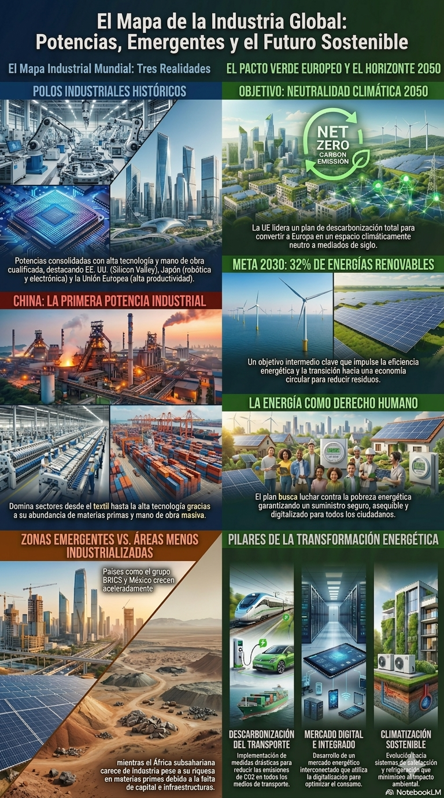
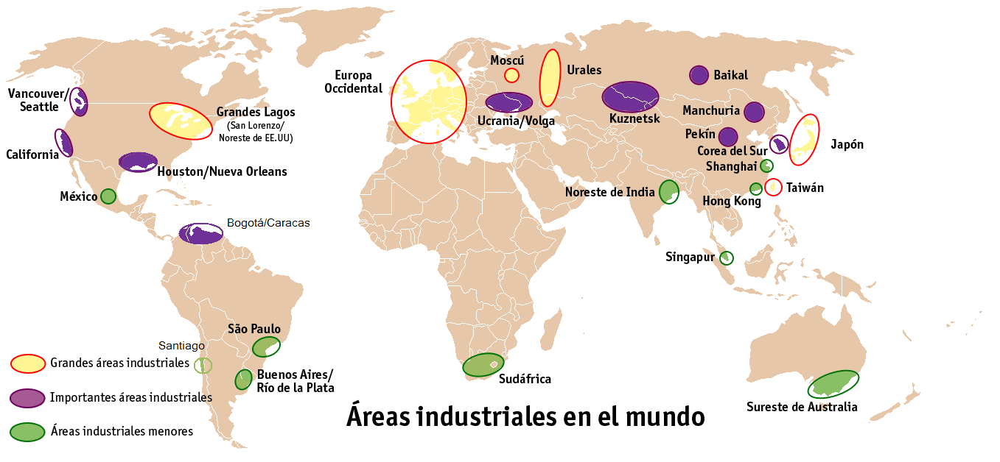
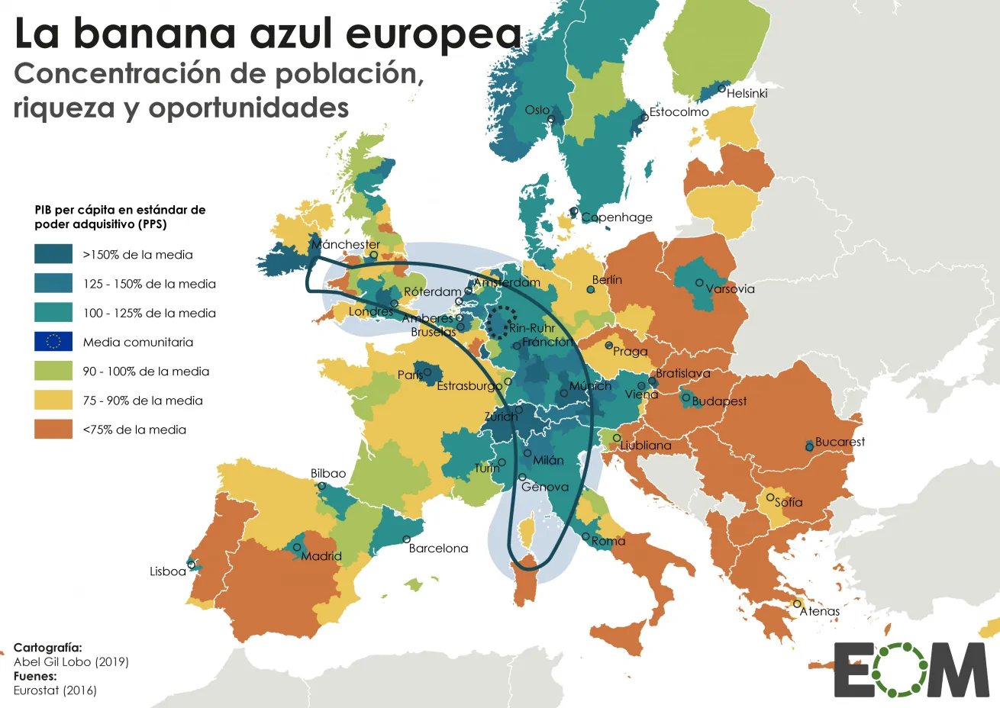
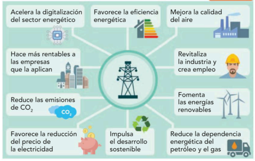

Navegación
Infografía

Principales regiones industriales
La actividad industrial presenta hoy una distribución asimétrica en el planeta, fruto de procesos históricos de desarrollo y de la reciente globalización económica. Aunque la industria es clave para construir economías competitivas y mejorar las condiciones de vida, su peso y especialización varían variablemente entre regiones.
El mapa industrial mundial: Potencias tradicionales y emergentes
Según las fuentes, podemos clasificar los países en tres grandes categorías atendiendo a su nivel de industrialización:
- Polos industriales históricos (Países industrializados): Son potencias con una industria consolidada, alta tecnología y mano de obra muy cualificada.
- Estados Unidos: Es la segunda potencia mundial, con centros innovadores como Silicon Valley y grandes concentraciones en los Grandes Lagos y la costa del Pacífico.
- Japón: Tercera potencia industrial, líder en robótica, electrónica y automóviles pese a su escasez de recursos naturales.
- Unión Europea: Mantiene un papel protagonista gracias a su elevado mercado de consumo y productividad.
- Zonas industriales emergentes: Países que han experimentado un crecimiento acelerado en las últimas décadas aprovechando la deslocalización y sus abundantes recursos.
- China: Se ha convertido en la primera potencia industrial del mundo gracias a la abundancia de materias primas y mano de obra, dominando sectores que van desde el textil hasta la alta tecnología.
- Grupo BRICS y otros: Destacan Brasil (biocombustibles), India (software y química), Rusia (metalurgia y defensa), México (automoción) y la República de Corea .
Áreas menos industrializadas: Se localizan en los países más pobres, especialmente en el África subsahariana , donde la falta de capitales, tecnología e infraestructuras genera una ausencia de industria pese a su riqueza en materias primas.

La industria en la Unión Europea (UE)
La industria ocupa un lugar estratégico en la UE, aportando aproximadamente una tercera parte de su PIB y empleando a más de 32 millones de personas. La creación de un mercado común ha sido determinante, facilitando la colaboración entre países y asegurando un extenso mercado libre de aranceles para la producción.
En cuanto a su localización, la industria europea tradicional se concentró en la llamada "Banana Azul" (o dorsal europea), un eje de gran riqueza que se extiende desde el Reino Unido hasta el norte de Italia, atravesando el Rin. Actualmente, el motor industrial del continente es Alemania , aunque países como Francia, Italia, España y Polonia mantienen un peso muy significativo.

Los rasgos principales de la industria de la UE son:
- Sectores líderes: Alta tecnología (aeronáutica, farmacéutica, microelectrónica) y tecnología media-alta (automóvil y maquinaria industrial).
- Se ha producido una reestructuración: Los sectores tradicionales (textil, siderurgia, naval) están en declive o proceso de reconversión debido a la competencia de países con costos más bajos.
- Existe una altísima dependencia energética y de materias primas de terceros países (importa el 60% de la energía que consume), lo que aumenta riesgos como volatilidad de precios, inseguridad en el suministro y exposición a decisiones políticas externas .
Retos de futuro y el Pacto Verde Europeo
Ante la emergencia climática, la UE lidera el plan de descarbonización para convertirse en un espacio climáticamente neutro en 2050 . Para ello, las políticas comunitarias impulsan el uso de energías renovables (objetivo del 32% para 2030), la eficiencia energética y la transición hacia una economía circular que reduzca los residuos industriales. Los principios energéticos son:
- Desarrollar un sector energético basado en fuentes renovables y la eficiencia energética. 2. Garantizar un suministro energético seguro y asequible para la UE.
- Desarrollar un mercado de la energía integrado, interconectado y digitalizado. 4. Implementar sistemas de calefacción y refrigeración más sostenibles.
- Reduzca las emisiones de CO en los medios de transporte.
- Contribuir a la lucha contra la pobreza energética, que pasa por lograr el reconocimiento de la energía como un derecho humano.
Beneficios de la descarbonización.
